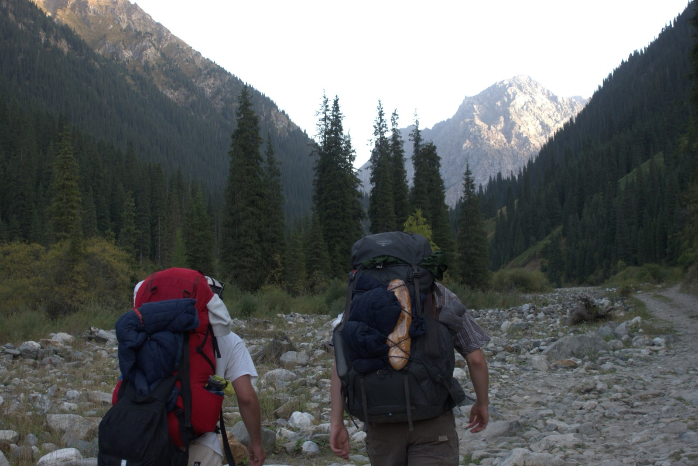
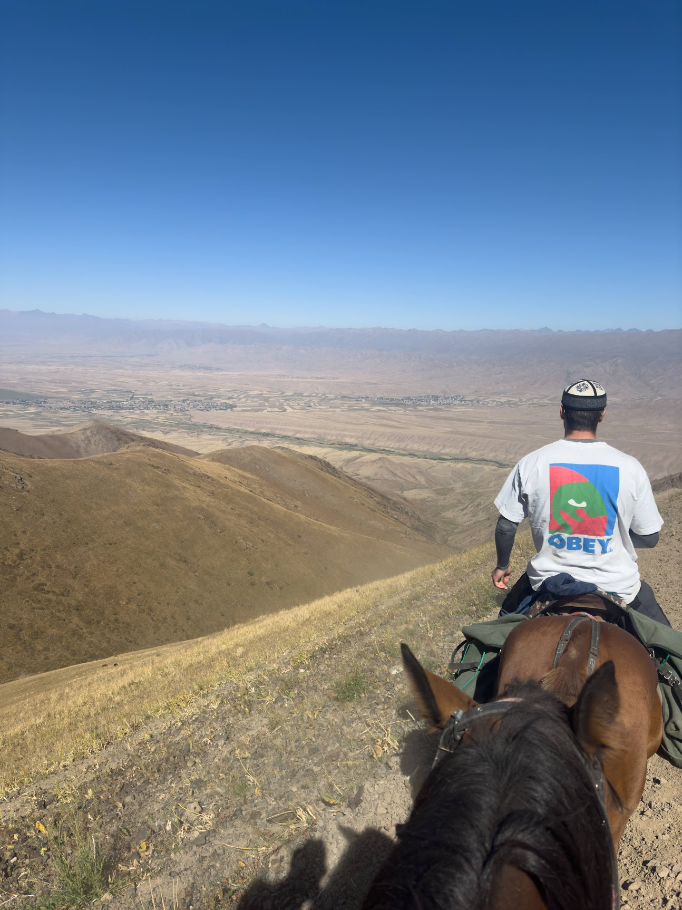

Ed Christie | Applied Software Engineer
portfolio.sh
visitor@mredchristie.dev:~$
cat aboutme.txt
Scroll to unmask
Applied Software Engineer | 2:1 Honours Graduate, Cardiff University 2026
Applied Software Engineering graduate from Cardiff University, awarded an Upper Second-Class Honours (2:1) degree, with a passion for building modern, user-centered applications. Experienced in full-stack development, CI/CD pipelines, and modern web technologies. Currently developing innovative solutions with React Server Components, Svelte, PostgreSQL, and Docker alongside development teams.
When I'm not coding, I enjoy travelling and adventuring to unique places around the world...
Problem-solving on the wall
Carving down mountains
Ocean activities & swimming

Exploring Mountains and new Places
Under the stars

Final Year Project, Cardiff University
A preventative security layer for the npm and Go Modules ecosystems that vets packages before they reach developers, not after. SPR is an event-driven, service-oriented registry where every package version undergoes sandboxed behavioural analysis, provenance verification, and reproducible builds before being promoted to the curated registry. It closes the gap that tools like Snyk and npm audit leave open: the window between a malicious publish and detection.
spr-registry for approved packages
and isolated spr-sandbox for analysis; package managers point at SPR
with no workflow changes
A real-time CS2 skin price aggregator that polls multiple third-party marketplaces (Skinport, Waxpeer, DMarket, CSFloat, Buff163) and presents the cheapest listings per skin in a single searchable interface. Built to eliminate the tedium of comparing prices across tabs manually.
A forecast engine that doesn't just blend the world's leading weather models - it scores them. Stored forecasts from six models are checked against what actually happened at your nearest weather station, and the forecast then follows whichever model has been most accurate for each variable at that location.
A companion to the weather app for UK surf breaks. Raw marine data means little on its own, so each break's orientation is used to turn swell and wind into the answer surfers actually want: is it working?
I'm currently open to new opportunities and collaborations. Feel free to get in touch :)